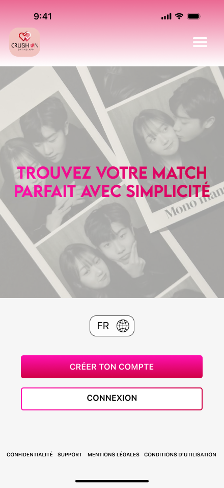

UX/UI Designer
CrushOn
Conception et design d’une application de rencontre inspirée de Tinder.

Présentation visuelle
Immersion

01 / Interface
Bienvenue sur CrushOn !
Page d’accueil de l’application CrushOn pour créer son profil.

02 / Nouveau compte sur CrushOn
Processus de création
Aperçu des différentes étapes de création d’un compte sur CrushOn.

03 / Expérience
Fonctionnalités clés
Travail sur les composants UI et l'esthétique générale de la plateforme.

04 / Une interface inspirée d’Epic Games
Préférences
Aperçu des différents paramètres de CrushOn, avec une interface inspirée d’Epic Games.